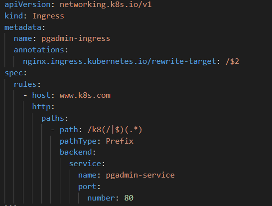

2.3 Ingress
2.3 Ingress
After deploying PgAdmin4 and Postgres, you can access PgAdmin using port forwarding or a NodePort. However, the preferred way to expose web apps in Kubernetes is with an Ingress
What is an Ingress?
An Ingress is a Kubernetes resource that manages external access to services in your cluster, typically HTTP/HTTPS. It lets you:
- Route traffic based on hostnames or URL paths
- Use custom domains
- Terminate TLS (HTTPS)
- Centralize routing for multiple apps
Why use Ingress?
Instead of exposing apps on random ports and IPs, Ingress lets you define clear rules for routing traffic, improving security and manageability.
Hostnames and Ingress
A hostname is a human-friendly name (like `www.example.com`) that maps to an IP address. For testing, you can define hostnames locally on your machine. Ingress lets you access your apps using these hostnames, rather than raw IPs and ports.
Build an Ingress for PgAdmin
Here is a basic Ingress Manifest:

Key fields:metadata.name: Unique name for the Ingress resource.spec.rules.host: The hostname to route traffic for (e.g., `pgadmin.local`).spec.rules.http.paths.path: The URL path to match (e.g., `/`).spec.rules.http.paths.backend.service.name: The name of the service to route traffic to (e.g., `pgadmin-service`).spec.rules.http.paths.backend.service.port.number: The port number of the service (e.g., `8080`).